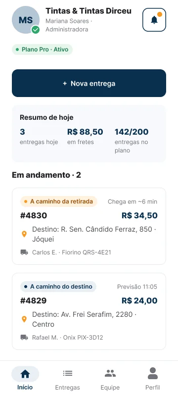
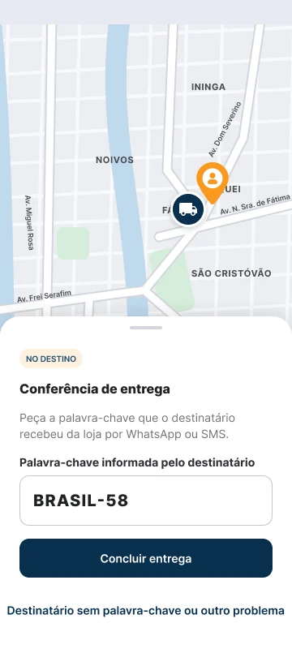
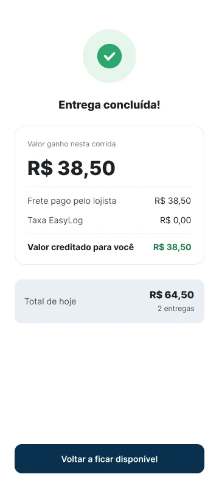
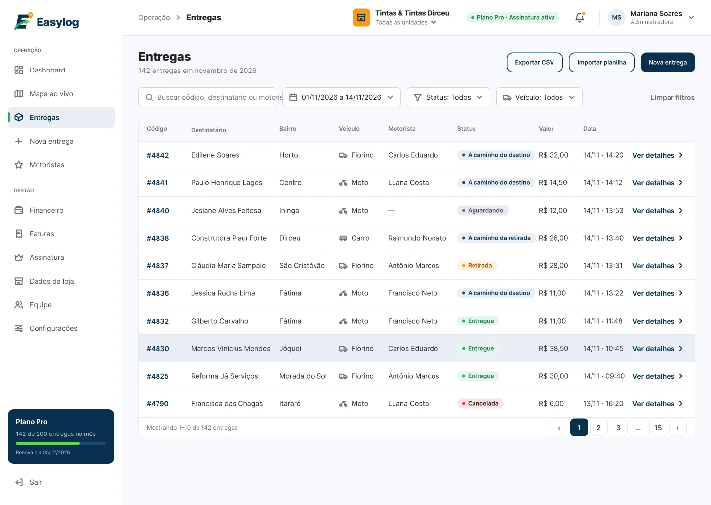
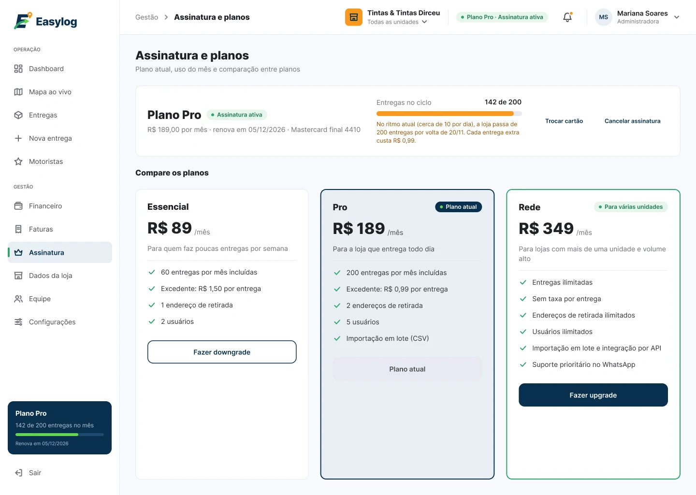
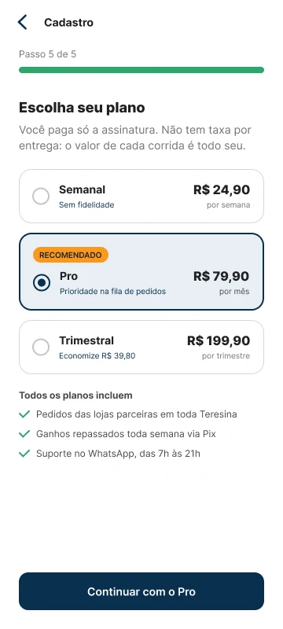
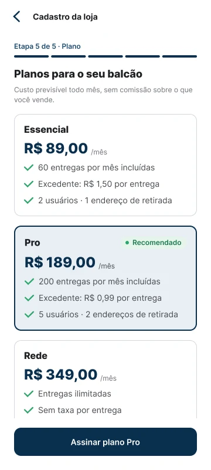

EasyLog
Entregas de loja de bairro em Teresina, cobradas por assinatura. O lojista sabe quanto paga pela plataforma no mês e vê o frete de cada entrega antes de pedir. O motorista fica com o frete inteiro.
- Tipo
- Projeto pessoal, 2026
- Meu papel
- Defini o produto, as regras de negócio, os preços e os fluxos, e revisei cada tela
- Ferramentas
- Figma e Claude. O Claude gerou as telas no Figma a partir das regras e dos textos que eu escrevi.
- Entrega
- App do lojista, app do motorista e painel web, design system e um protótipo de ponta a ponta


Resumo em 30 segundos
Decidi o produto: assinatura no lugar de comissão, os seis planos, o veículo pelo peso da carga e a conferência por palavra-chave. Revisei cada tela.
O motorista fica com 100% do frete, e o lojista paga um plano com pacote de entregas e taxa fixa.
Um protótipo que segue a entrega #4830 da loja até o painel. Comparando as três frentes, achei e corrigi cinco divergências.
Testar com lojistas e motoristas e definir a regra que calcula o frete.
A ideia
O EasyLog liga lojas de bairro de Teresina a motoristas autônomos que fazem as entregas. Ele continua o Hub Logístico, que fiz em 2025 só com o app do motorista.
Toda entrega começa com alguém no balcão da loja e termina com o motorista na porta do cliente. Por isso desenhei as duas pontas e o painel que acompanha as duas, e defini quanto cada lado paga e para quem vai o dinheiro.
No Hub Logístico faltava a loja que pede a entrega e o dono que paga por ela.
O problema, dos dois lados
Não fiz pesquisa com lojistas nem com motoristas. O problema abaixo vem do que eu vejo no comércio de Teresina.
Mercadinho, farmácia, loja de material de construção. Não tem volume para manter motorista fixo.
- As plataformas grandes cobram comissão por pedido e comem a margem
- Essas plataformas priorizam restaurante e rede grande
- Carga maior que uma moto aguenta, como tinta e caixa, fica sem opção barata
Autônomo, de moto, carro ou utilitário. Usa o celular na rua, com uma mão e sol na tela.
- Perde parte de cada corrida em taxa
- Aceita pedido sem saber o que vai levar, para onde e por quanto
- Tem renda instável de uma semana para outra
Há ainda um problema que os dois dividem: a loja entrega a mercadoria a um desconhecido e o motorista não sabe se está entregando à pessoa certa
Quem usa cada frente
Desenhei cada frente para o lugar onde ela é usada. O destinatário, cliente da loja, não tem app: recebe um link e uma palavra-chave por WhatsApp ou SMS.
| Frente | Quem usa e onde | O que isso pede da interface |
|---|---|---|
| App do lojista | Dono ou atendente, no balcão, entre um cliente e outro | Pedir uma entrega em poucos toques e conferir a retirada sem sair do balcão. A meta foi criar uma entrega em menos de um minuto. |
| App do motorista | Motorista autônomo, na rua, em movimento | Valor, endereço e próxima ação legíveis de relance. Botões grandes (48 px), poucos passos por tela e um modo de alto contraste. |
| Painel web | Dono ou gestor, no computador, planejando o mês | Visão do mês inteiro: volume, custo, uso do plano, várias unidades, equipe e faturas. |
Decisões de produto
Antes de qualquer tela, defini as regras. Elas aparecem em quase todos os fluxos, então mudar uma depois significaria refazer dezenas de telas.
"Quanto a plataforma vai me cobrar?"
O lojista paga um plano com um pacote de entregas incluído e só paga taxa no que passar do pacote. Dentro do pacote, a taxa EasyLog aparece como R$ 0,00 na tela, para ele ver que não está sendo cobrado de novo.
O motorista paga uma assinatura mensal e fica com 100% do frete de cada entrega. Nos apps grandes, uma parte de cada corrida fica com a plataforma. Aqui, o valor que aparece no pedido é o que o motorista recebe.
| Lojista | Mensal | Incluídas | Excedente |
|---|---|---|---|
| Essencial | R$ 89 | 60 | R$ 1,50 |
| Pro recomendado | R$ 189 | 200 | R$ 0,99 |
| Rede | R$ 349 | ilimitado | sem taxa |
| Motorista | Preço | Taxa por entrega |
|---|---|---|
| Semanal | R$ 24,90 | nenhuma |
| Pro recomendado | R$ 79,90 / mês | nenhuma |
| Trimestral | R$ 199,90 | nenhuma |
O plano semanal existe para o motorista que ainda está testando e não quer se comprometer com um mês.
Na prática, o pacote é uma taxa por entrega paga adiantado. No Pro, R$ 189 por 200 entregas dá R$ 0,95 por entrega. A diferença para a comissão é que essa taxa não sobe junto com o frete. O frete continua sendo cobrado por entrega e muda com distância, veículo e carga.
Então o que o lojista consegue prever é a parte da plataforma, cerca de 5% do que ele gasta com entregas. O resto depende do frete, e a regra dele ainda não existe.
| Um mês da Tintas & Tintas | Valor |
|---|---|
| Plano Pro | R$ 189 |
| Excedente: 100 entregas além das 200, a R$ 0,99 | R$ 99 |
| Frete: 300 entregas a R$ 16,52 de média | R$ 4.956 |
| Total do mês | R$ 5.244 |
| Parte da EasyLog (plano + excedente) | R$ 288 (5,5%) |
A loja fez 142 entregas até 14/11, perto de 10 por dia, o que dá cerca de 300 no mês. O custo médio de R$ 16,52 é o que aparece no painel. Se todas fossem de utilitário, como a #4830 (R$ 38,50), o frete passaria de R$ 11 mil e a assinatura cairia para 2,4% da conta.
"Isso cabe numa moto?"
O lojista informa o tamanho da carga, e o app sugere o veículo: moto até 20 kg, carro até 200 kg, utilitário até 650 kg. O pedido só vai para motoristas com veículo compatível. Assim o motorista de moto não recebe um pedido de duas latas de tinta de 18 litros.
"É a pessoa certa?"
Cada entrega tem duas palavras-chave. Na loja, o motorista mostra a de retirada e o lojista confere antes de liberar a mercadoria. No destino, quem recebe diz a palavra de entrega, que chegou por WhatsApp, e o motorista digita para concluir.
Preferi palavra a código numérico porque é mais fácil de falar em voz alta no balcão ou no portão, e mais difícil de errar.
"Vale a pena aceitar?"
O pedido chega com o valor em destaque, o tipo de carga, a loja, o bairro de destino e a distância total. A meta é que o motorista decida dentro dos 30 segundos do timer sem abrir outra tela. Como a de "menos de um minuto" do lojista, essa meta não foi medida.
Pergunta em aberto: na base do card, Recusar (contorno) e Aceitar entrega (preenchido, mais largo) têm a mesma altura e ficam lado a lado. Não registrei essa decisão. Um Aceitar bem mais forte ajudaria a aceitar antes do timer zerar, mas aumenta o risco de aceitar sem querer com uma mão só. Botões parecidos protegem contra esse toque errado e custam um pouco mais de leitura. Quero decidir isso num teste na rua.
Uma entrega de ponta a ponta
Para conferir se as três frentes conversavam, criei uma história única e usei os mesmos dados em todas as telas: a loja Tintas & Tintas Dirceu, a administradora Mariana, o motorista Carlos Eduardo e a entrega #4830, de duas latas de tinta para o Jóquei. O protótipo segue essa entrega em 18 passos.
App do lojistaApp do motoristaPainel web
No balcão, Mariana toca em "Nova entrega" e preenche três etapas: quem recebe, o que vai e qual veículo. O frete de R$ 38,50 aparece antes de ela confirmar.

Carlos recebe o pedido com tudo à vista e aceita. Na loja, o app mostra a palavra ESTRELA-94 em letras grandes, para ele virar o celular para o balcão.

Mariana compara a palavra da tela do Carlos com a do app dela e confirma a retirada. O cliente, Marcos, recebe nesse momento o link de acompanhamento e a palavra de entrega por WhatsApp.

No Jóquei, Marcos diz BRASIL-58. Carlos digita, conclui e vê o valor creditado: R$ 38,50, com a taxa EasyLog em R$ 0,00 na mesma tela.



O painel de quem administra
O app é para as entregas do dia. No painel, o dono olha o mês: quantas entregas foram feitas, quanto custaram, quando o pacote vai acabar e se vale trocar de plano.



Entrar e assinar
O motorista manda CNH, selfie e documento do veículo, e o cadastro passa por análise de até 48 horas antes da primeira corrida. A tela de espera mostra o status de cada item, para ele saber o que falta.



Quando dá errado
O protótipo segue o caminho em que tudo dá certo. Os estados abaixo ainda não têm tela revisada neste estudo de caso: a especificação previa frames para parte deles e existem versões geradas no Figma, mas nenhuma entrou no protótipo nem passou pela comparação entre frentes. Por enquanto, cada um é só a regra escrita abaixo.
| Situação | Quem vê | Regra que proponho |
|---|---|---|
| O timer de 28 s zera | Motorista | O card some com o aviso "Este pedido foi oferecido a outro motorista" e o app volta a procurar entregas. Deixar o tempo acabar não conta como recusa. |
| Ninguém aceitou | Lojista | O pedido passa para o próximo motorista compatível enquanto Mariana vê "Procurando motorista". Se ninguém aceitar em alguns minutos (o número precisa de teste), ela escolhe entre continuar procurando, agendar ou trocar o veículo. O painel já mostra "#4840 · Aguardando motorista", e o app precisa mostrar o mesmo estado. |
| A palavra-chave não confere | Lojista, na retirada Motorista, no destino | Na loja, a mercadoria não sai: o botão de liberar fica bloqueado, e Mariana confere o nome, a foto e a placa do motorista que o app já mostra. Se ainda não bater, ela cancela a entrega sem custo e o pedido volta para a fila. No destino, o motorista tem três tentativas. Depois disso, ele abre "Problema na entrega" e a mercadoria volta para a loja. |
| Cancelamento | Lojista Motorista | O lojista cancela sem custo antes do aceite, e a entrega não conta no pacote. Depois do aceite, falta decidir se o motorista recebe pelo deslocamento até a loja. Se o motorista cancelar antes da retirada, o pedido volta para a fila na frente dos outros e o lojista é avisado. Depois da retirada, o app não deixa cancelar, só relatar um problema. |
| Cadastro recusado depois do pagamento | Motorista | Hoje a tela de análise mostra o Pix de R$ 79,90 aprovado com os documentos ainda em análise. Ou seja, o fluxo cobra antes de aprovar, uma decisão de negócio que eu não tinha tomado. Minha proposta é aprovar primeiro e cobrar depois. Se a cobrança antecipada ficar, a recusa definitiva devolve o valor inteiro na hora, a recusa por foto ilegível deixa reenviar o documento sem perder o plano, e o plano só começa a contar na aprovação. |
| Primeiro dia sem entregas | Lojista Painel | O início do app mostra só o botão "Nova entrega" e uma linha sobre as duas palavras-chave, sem cards de resumo zerados. O painel troca o gráfico vazio por uma lista do que configurar (unidades, equipe, cartão) e mostra o plano em "0 de 200". |
Design system
Parti do Mobile Apps Prototyping Kit e do Map Navigation UI Kit para os apps, e da estrutura do Simple Design System para o painel. As cores saíram da logo. São 49 componentes no arquivo do design system, com 3 coleções de variáveis e 17 estilos de texto.
#092F4EAção e botão principal#2DA66BSucesso e dinheiro recebido#F9991FAlerta e destino no mapa#1F2024Texto principalCada cor tem um papel fixo. O verde só aparece quando dá certo ou quando entra dinheiro, e o laranja marca o destino em todos os mapas.
Os 12 status (entrega, cadastro e assinatura) viraram variáveis com fundo e texto já combinados, para nenhuma tela inventar a própria cor de alerta.
Aa
Inter nas três frentes. Criei dois estilos que o kit não tinha: Number, para valores em reais, e Keyword, em 40 px com espaçamento largo, para a palavra-chave ser lida a um braço de distância.
Acessibilidade
Contraste AA em todo texto
Auditei 3.171 textos nas três frentes, comparando a cor de cada texto com o fundo pela régua AA: 4,5:1 para texto comum e 3:1 para texto grande (24 px, ou 18 px em negrito). O cinza #8F9098, que vinha do kit como cor de texto secundário, saiu do texto e ficou só em ícone desativado e borda.
Área de toque
48 × 48 px nos apps e 24 × 24 no painel. Quando o elemento visível é menor, como um toggle ou link de texto, ele fica dentro de uma área de toque transparente.
Para o sol forte, a coleção de cores tem um segundo modo que escurece os tons médios e os cinzas. O motorista liga em Configurações.
Quando comparei as duas telas, a diferença ficou pequena demais: a tela padrão já era escura o bastante, e o modo mexe em poucos tons. Por isso não mostro a comparação aqui. O modo precisa ser refeito e está nos limites.
No Figma: a página 🎨 Design System do arquivo de telas reúne cores, status, tipografia, espaçamentos, sombras, ícones e componentes, montada com instâncias dos componentes reais. Abrir a prancha (abre em nova aba)
Como trabalhei com a IA
Eu defini as regras de negócio, a divisão do trabalho e os textos, o Claude gerou as telas a partir disso e eu revisei cada uma. Dividi o projeto em dez subpartes (design system, depois três para cada frente), cada uma com a lista de telas e um checklist, para revisar uma antes de pedir a próxima.
- EuDecidi as três frentes, a assinatura no lugar da comissão, os preços dos seis planos, a capacidade de cada veículo e o glossário ("motorista", nunca "entregador").
- EuCriei a história de referência (a loja, a Mariana, o Carlos e a entrega #4830) para todas as telas usarem os mesmos dados.
- ClaudeGerou as telas de cada subparte no Figma a partir dessas regras, com os componentes do design system.
- EuRevisei cada subparte antes de seguir e comparei as três frentes lado a lado. As divergências da tabela abaixo saíram dessa comparação.
O que a revisão encontrou
Como gerei uma frente de cada vez, cada uma saiu coerente sozinha, mas as três não batiam entre si. A história única da entrega #4830 saiu dessa rodada.
| Antes | Depois |
|---|---|
| O painel usava códigos EL-24830, e os apps, #4830 | Todos os códigos no formato #48xx |
| O motorista do cadastro tinha outro nome e outra placa | Carlos Eduardo, Fiorino QRS-4E21, em todas as telas |
| Preços e dados de exemplo espalhados pelos prompts de cada frente | Uma tabela de regras e da história de referência no Figma, com a coluna "onde aparece" |
| 196 componentes no arquivo de telas, com ícones repetidos | Ícones unificados, e as variações do lojista com o sufixo "· Lojista" |
| Textos secundários em cinza #8F9098, abaixo do AA | Cinza mais escuro; o #8F9098 ficou só em ícone e borda |
O que a revisão deixou passar
Minha revisão pegou dado e regra e deixou passar erros de interface. Uma segunda rodada de crítica, com avaliadores simulados por IA, achou estes. Eles ainda estão nas telas e entram na próxima correção.
| Tela | O que está errado | Correção |
|---|---|---|
| Cadastro em análise (motorista) | O item "Veículo · Fiat Fiorino · QRS-4E21" usa ícone de moto. Como o pedido depende do veículo, o ícone também informa. | Ícone de utilitário, e o ícone de cada item vindo do tipo de veículo cadastrado |
| Dashboard (painel) | No card "Custo total", a linha "Motoristas R$ 2.345,82 · Taxas R$ 0,00 (dentro do plano)" passa da borda e é cortada. | Quebrar em duas linhas ou encurtar para "Taxas R$ 0,00" |
| Dashboard e Assinatura (painel) | A regra diz que o verde só aparece quando dá certo ou quando entra dinheiro. No dashboard, a barra do dia 14 é verde só por ser hoje, e o uso do plano 142/200 é verde. Na tela de assinatura, o mesmo 142/200 é laranja. | Uma cor só para uso do plano nas duas telas (marinho), laranja só quando o pacote estiver perto do fim, e o dia de hoje marcado sem verde |
| Assinatura (painel) | O aviso "a loja passa de 200 entregas por volta de 20/11" está em texto pequeno laranja. Preciso conferir o contraste dele. | Conferir o contraste e, se faltar, usar o par de cores do status de alerta |
| Nova entrega (lojista) e Novo pedido (motorista) | O lojista vê "Distância estimada 6,4 km" antes de pedir. No pedido do motorista, esses 6,4 km são 1,8 km até a loja mais 4,6 km depois da retirada. Assim, o frete do lojista inclui o deslocamento de um motorista que ainda não foi escolhido. | Os documentos do projeto só dizem "6,4 km" e não definem o que entra na conta, porque a regra do frete não existe. Minha proposta é o lojista ver só loja até destino (4,6 km) e o deslocamento até a loja ficar fora do frete. Isso muda o valor de R$ 38,50 e depende da regra do frete. |
| Itens do pedido (lojista e motorista) | O lojista vê "2× lata de tinta acrílica 18 L / 1× rolo com extensor". O motorista vê "2x Lata de tinta acrílica 18 L / 1x Rolo de pintura com extensor". | O mesmo texto nas duas frentes, tirado da descrição que o lojista digita |
Limites e perguntas em aberto
Antes de chamar o projeto de pronto, faltam estas coisas.
- AltaNinguém testou
Não conversei com lojistas nem com motoristas, e ninguém usou o protótipo. O problema e as soluções são hipóteses minhas.
- AltaPreços sem validação
Não sei se R$ 79,90 por mês cabe no bolso do motorista nem se as assinaturas pagam a operação. Os números foram decididos por coerência entre eles, sem pesquisa.
- AltaQuem define o frete?
O frete de R$ 38,50 aparece pronto. Não desenhei a regra de cálculo (distância, veículo, carga) nem se o motorista pode recusar por achar baixo. E o frete é quase toda a conta do lojista: cerca de 95% na conta da seção 04. Também falta definir se os 6,4 km incluem o caminho do motorista até a loja (seção 10).
- AltaEstados de erro sem tela
Timer zerado, ninguém aceitou, palavra-chave errada, cancelamento, cadastro recusado depois do pagamento e primeiro dia sem entregas têm só a regra escrita na seção 08.
- MédiaA tela do destinatário não existe
Marcos recebe um link de acompanhamento por WhatsApp, mas a página que esse link abre não foi desenhada.
- Média"Menos de um minuto" e "30 segundos" não foram medidos
Criar uma entrega leva três etapas e uma revisão, e o motorista tem 30 segundos para decidir o pedido. As duas são metas. Sem um teste cronometrado, não sei se alguma delas foi cumprida.
- MédiaAlto contraste fraco
As telas no modo alto contraste ficaram quase iguais às padrão. O modo precisa de mudanças mais visíveis, como fundo do mapa mais claro e bordas mais grossas.
- MédiaDesign system não publicado
As telas usam uma cópia dos componentes, e não a biblioteca. Antes de publicar, uns 150 componentes que só existem nas telas precisam ir para o arquivo do design system.
- MédiaProtótipo feito de cópias
As 18 telas do protótipo são cópias das originais. Uma mudança numa tela precisa ser repetida à mão na cópia.
Aprendizados
A maior parte das divergências que corrigi só aparecia quando eu punha as frentes lado a lado.
Uma história amarra as frentes
Com a Tintas & Tintas, o Carlos e a #4830 em todas as telas, um código ou um nome diferente aparecia logo na comparação.
Regra de negócio vem antes da tela
O preço aparece no cadastro, no pedido, no recibo, na assinatura e no painel. Definir antes evitou refazer dezenas de telas.
Gerar por partes cria divergência
O Claude manteve cada frente fiel ao próprio prompt, mas não às outras. Comparar uma frente com a outra ficou comigo.
Conferir na tela, lado a lado
O modo alto contraste existe nas variáveis, mas só olhando as telas lado a lado vi que ele quase não muda nada.
Próximos passos
Conversar com cinco lojistas do Dirceu e do Jóquei e cinco motoristas sobre como entregam hoje e quanto pagam. Testar o protótipo com tarefas: um lojista cria uma entrega (cronometrada) e um motorista aceita um pedido na rua, no sol. Desenhar a regra do frete e a conta da plataforma, para saber se os preços fecham. Desenhar a página de acompanhamento que o destinatário abre pelo link. Refazer o modo alto contraste e testar com o celular no sol. Publicar o design system como biblioteca e trocar a cópia nas telas.
Projeto pessoal. O EasyLog, a Tintas & Tintas Dirceu, as pessoas, os preços e os números das telas são fictícios.